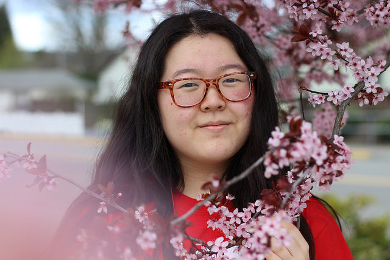

PORTFOLIO
♥ About ♥

My name is Yerin Yang. I am 17 years old, and I love all things STEAM!
I am going to be a senior at Newport High School in Bellevue, Washington.
I have done FRC (FIRST Robotics Competition) for 3 years and will be returning for my fourth and final year.
In all three years, I have earned varsity letters!
My team, NRG 948, went to the World Championships in Houston, Texas, last year to compete with teams from all around the world!!!
I have also taken two CISCO Networking Academy courses, and I am CCNA Certified ith a score of 1000/1000.
♥ Likes ♥
+ Peaches
+ Sweet Tea
+ Robotics
+ Cybersecurity
+ Most animals
+ Bees
+ Drawing
+ Mac and Chee
+ Wholesome memes
♥/♥ Dislikes ♥/♥
+ Lentils
+ People who are mean to kids for no reason
+ When the accordian buses block off the road
+ Tea that's too bitter
+ Unholesome memes
♥ Links ♥
Control the Rain
Raise a baby dragon!
Make cute music with this sequencer